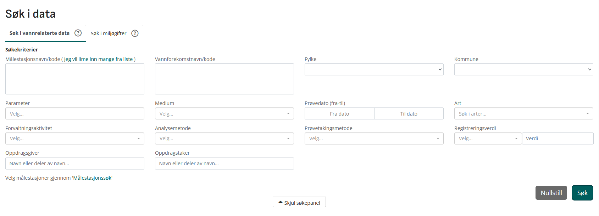
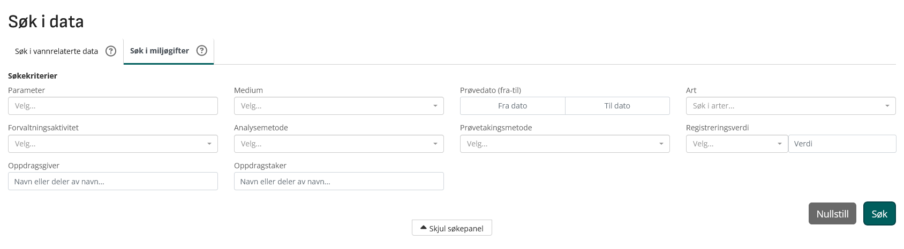

Getting data from Vanmniljø
Vm offer two ways to get data: a frontend at https://vannmiljo.miljodirektoratet.no/ (including a qGIS-powered map interface), and an API (documented here, needs a key)
-
In practical terms Vannmiljø consists of two primary tables:
WaterLocation(site data) andWaterRegistration(parameter data), linked by the keyWaterLocation.Vannlokalitet ID=WaterRegistration.Vannlokalitet_kode- this is a many-to-one relationship - a single site can have many samples, a single sample can only have one site
Frontend
Vannmiljø’s frontend is good but not great. It offers a decent range of differentiation in querying, plus the ability to trace individual datapoints and view them on a map is very useful. However, the UI is restrictive in places.
Søk i data - Search in data
This is how you search WaterRegistration. The UI has two panes: “vannrelaterte data”, a supercategory that covers all measured indices (including measured chemical concentrations but also biological, physicochemical and hydrological parameters), and miljøgifter, which includes only chemical data (although note that vannrelaterte is perhaps misnamed, as data on chemical concentrations in non-aquatic media can also be downloaded here).
Based on my testing, both of these panes return data in the same format. However, for no apparent reason (perhaps just a mistake) the miljøgifter panel doesn’t allow querying by any geographical parameters (Målestasjonsnavn/kode, Vannforekomstnavn/kode, Fylke, Kommune).

